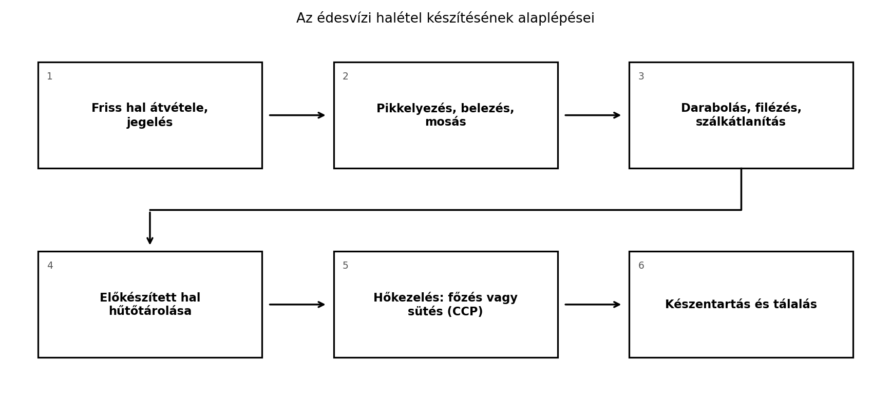

Egy pénteki menüben gyakran szerepel halászlé, rántott ponty vagy éppen süllőfilé. A hal drága nyersanyag, és nagyon érzékeny: ha rosszul választod meg az eljárást, a húsa szétesik, kiszárad, vagy nem sül át. A vendég pedig azonnal észreveszi, ha a hal szálkás, nyers, keserű vagy túlfőtt.
Ezért ebben az alfejezetben megtanulod, milyen édesvízi halból milyen ételt érdemes készíteni, hogyan készül a halászlé és a rántott ponty, és milyen élelmiszer-biztonsági szabályokat kell közben betartani.
A hal útja a konyhában mindig ugyanaz az alapfolyamat:

A folyamat minden lépésénél ugyanaz a kérdés: a hal hidegen marad-e, és nem érintkezik-e kész étellel? Ha a válasz nem, a hal gyorsan romlik, és keresztszennyeződést okoz.
Definíció. A vendéglátó gyakorlatban az édesvízi halakat zsírtartalmuk (sovány, félzsíros, zsíros) és szálkásságuk szerint csoportosítjuk. Ez segít az eljárás kiválasztásában.
| Csoport | Jellemzők | Gyakori halak | Jellemző eljárások |
|---|---|---|---|
| Sovány, fehér húsú | finom rostú, kevésbé erős halíz; a süllő és a harcsa szálkaszegény, a csuka szálkásabb; a harcsa fehér húsú, de közepesen zsíros | süllő, csuka, harcsa | filézve rántva, roston sütve, párolva |
| Zsírosabb, szálkás | erőteljesebb íz, sok apró villás szálka (irdalni kell) | ponty, busa, keszeg | halászlé, halpaprikás, irdalva rántva, pörkölt |
| Félzsíros, finom / zsíros | a pisztráng félzsíros, finom; az angolna nagyon zsíros | pisztráng; angolna | egészben sütve, füstölve, párolva |
Összefüggés. A sovány halak jól bírják a száraz, gyors hőkezelést, például a rostonsütést. A zsírosabb, szálkás halak (irdalás után) a sütést és a hosszabb, fűszeres, nedves eljárásokat is jól tűrik, például a halászlét vagy a halpaprikást.
Megjegyzés. A harcsa húsa fehér, de zsírosabb, mint a süllőé; az angolna vére nyersen mérgező, ezért a nyers angolnával védőkesztyűben dolgozz, és a vérrel ne kerülj kapcsolatba szembe, sebbe (ellenőrizendő). A busa húsa nagyon szálkás, ezért leggyakrabban fűszeres, nedves ételbe kerül.
Az áruátvételen a halfajt a megjelenése alapján is fel kell ismerned. A rajztábla a táblázat hét halát mutatja csoportonként, mindegyiknél egy-két jól látható felismerési jeggyel.
A rajzok sematikusak és egymáshoz nem méretarányosak; a végleges felismeréshez a valódi hal vagy jó minőségű fénykép a mérvadó. Figyeld a döntő jegyeket: a ponty nagy pikkelyét és bajuszszálait, a harcsa pikkelytelen, széles fejét, a csuka kacsacsőrszerű száját, a pisztráng pettyeit és kis zsírúszóját. A HTML-kiadásban a halra mutatva kiemelődik a neve és a jegyei.
A hal előkészítését már a Baromfi, vad és hal előkészítése alfejezetben tanultad. Itt csak a halételekhez fontos két műveletet ismételjük:
Szálkátlanítás (tűszálkás halak).
A tűszálkás halak (pl. pisztráng, lazac) filéjéből a hosszanti, középső
szálkasort csipesszel vagy halcsipesszel kell eltávolítani. A szálkát
egyenként, a dőlése irányában (a fej felé) finoman húzd ki, közben a
másik kezeddel tartsd le mellette a húst. A halat soha ne nyomd szét
közben.
Irdalás.
Irdalás ponty, busa esetén: a filét a húsoldal felől
2–3 mm-enként, merőlegesen bevagdossuk a bőrig, de a bőrt nem vágjuk át;
így a villás szálkák apróra vágódnak, és sütés vagy főzés közben
megpuhulnak. A bőrös hal (pisztráng, süllő) bőrének sekély bemetszése a
bőr összeugrását akadályozza, és a hús egyenletesebben sül át. A
csipeszes szálkázás a tűszálkás halaknál (pl. lazac, pisztráng)
használható.
A két eljárás nem cserélhető fel. A ponty villás szálkái a húsban, az izomrétegek között ülnek, ezért nem lehet őket kihúzni: az (a) rajz oldalmetszete mutatja, hogy a vágás a húsoldal felől a bőrig hatol, de a bőr ép marad – ha átvágod, a filé szétesik. A lazac és a pisztráng tűszálkái egy sorban állnak a középvonalban, ezért (b) csipesszel kihúzhatók. A HTML-kiadásban a két eljárást külön-külön lapozhatod.
A halászlé a magyar konyha legismertebb halétele. A tájegységi változatok sokszor eltérnek egymástól, ezért a szakácsiskolában egy alaptechnológiát tanulunk.
Jogszabály. A halászlé nem önállóan védett termék,
de egyes tájegységi halászlék, haltermékek eredetvédelmet kaphatnak. A
konkrét oltalom alatt álló megnevezések listáját a Magyar
Élelmiszerkönyv és az uniós oltalom alatt álló elnevezések jegyzéke
alapján ellenőrizni kell.
(ellenőrizendő: az adott tájegységi halászlé oltalom alatti
megnevezése, ha az étlap ezt fel kívánja tüntetni)
Megjegyzés. A bajai és a szegedi halászlé különbözik egymástól, de a pontos tájegységi receptúra üzemenként és vizsgaközpontonként is változhat. A vizsgán mindig a tanult iskolai alaptechnológiát kell követni.
A halászlé alapja a passzírozott hallé. Az apró halat, halcsontot, fejet, hagymát fűszerpaprikával megfőzzük, majd áttörjük. Ez adja a sűrű, piros levet. A szép halhúst, például a ponty törzsét karikára vágjuk, és csak a végén főzzük bele, hogy ne essen szét.
Adagszám: 10 adag
Adagsúly: kb. 450 ml kész lé + halhús
| Nyersanyag | Mennyiség 10 adagra | Megjegyzés |
|---|---|---|
| Ponty, pikkelyezve, bontva | 4 kg | törzséből szép karajok, a többi az alaphoz |
| Apró hal vagy pontyfej | 1 kg | keszeg, törpeharcsa, pontyfej; az alaphoz |
| Halfej, farok, gerinc | 0,5 kg | a passzírozáshoz |
| Vöröshagyma | 250 g | tisztítva |
| Fűszerpaprika | 40 g | édesnemes, szükség szerint csípős |
| Só | 25 g | finom |
| Víz | 5 l | hideg (a főzés és a passzírozás után kb. 4,5 l lé marad) |
| Zellerlevél vagy gyökér | 50 g | elhagyható |
| Gyufatészta | 300 g | bajai jelleggel tálaláshoz (külön főzve) |
Allergének: hal; zeller (ha zellerlevelet vagy
-gyökeret használunk – a vendégtájékoztatás a ténylegesen használt
összetételt kövesse).
A tálaláshoz használt gyufatészta: glutén, tojás.
Eszközök és gépek: halfeldolgozó kés, vágódeszka, nagy lábos, szűrő vagy passzírozó, tiszta konyharuha, tálalóedény.
Előkészítés:
Elkészítés:
Kritikus pontok:
Készentartás és tálalás:
A halászlét forrón, lehetőleg azonnal tálald. Adagonként 1–2 halszeletet
(halkarajt) helyezz a lébe. A levet csak annyit forrald, amennyi a
hőntartáshoz szükséges.
Minőségi követelmények:
Színe élénk piros, illata friss halas, paprikás; a lé sűrű, de nem
kocsonyás; a hal húsa egészben marad, fehér; íze tiszta, nem keserű.
Tipikus hibák és javításuk:
- A halászlé zavaros: nem passzírozták rendesen, vagy forralás közben
keverték. Csak a levet szűrd, és ne keverd. - A hal szétesett: túl
hosszú főzés. A karajokat csak a végén tedd a lébe. - Keserű a lé: az
epe a belezéskor felszakadt. A halat azonnal, óvatosan kell belezni.
Változatok:
A fenti lap passzírozott, szegedi jellegű alaptechnológia: többféle
halból passzírozott alaplé, ebbe kerülnek a halszeletek. Bajai jelleggel
nem passzírozunk: a pontyszeleteket sok hagymával és paprikával együtt,
egyben főzzük, és gyufatésztával tálaljuk (ellenőrizendő: tájegységi
receptúrák). A csípős ízt erős paprika hozzáadásával lehet fokozni.
A halpaprikás abban különbözik a halászlétől, hogy a halat paprikás hagymaalapban, kevés vízzel pároljuk, majd tejfölös habarással sűrítjük.
Eljárás röviden:
Allergén. Hal, tejföl (tej), habaráshoz liszt (glutén).
A rántott ponty a leggyakoribb sült halétel. A halhúst lisztbe, tojásba, zsemlemorzsába bundázzuk, majd bő olajban kisütjük. A panír védi a húst a kiszáradástól.
Adagszám: 10 adag
Adagsúly: kb. 220 g sült hal (2 db filé)
| Nyersanyag | Mennyiség 10 adagra | Megjegyzés |
|---|---|---|
| Pontyfilé, bőrrel, irdalva | 2 kg | nettó (filézett, bőrrel, pikkelytelenítve), adagonként 200 g |
| Finomliszt | 200 g | allergén: glutén |
| Tojás | 6 db | allergén: tojás |
| Zsemlemorzsa | 400 g | allergén: glutén |
| Só | 20 g | finom |
| Bő olaj a sütéshez | 3 l | napraforgóolaj |
Allergének: hal, glutén, tojás.
Eszközök és gépek: vágódeszka, kés, éles, vékony pengéjű kés az irdaláshoz, panírozó tálcák, olajsütő vagy vastag falú lábos, hőmérő, tűzoltó eszköz.
Előkészítés:
Elkészítés:
Kritikus pontok:
Készentartás és tálalás:
A rántott halat nem szabad egymásra halmozva, zárt edényben hosszan
gőzben tartani, mert a panír megpuhul. Tálald azonnal, forrón.
Minőségi követelmények:
A panír egyenletes aranybarna, ropogós; a hal húsa fehér, rétegesen
elválik; íze friss, nem keserű; a filé nem esik szét.
Tipikus hibák és javításuk:
A pisztráng leggyakrabban egészben, bőrrel sütve készül. A bőrét irdald be, a hasüreget sózd, és kevés citrommal, vajjal ízesítsd. Kevés olajon, közepes lángon süsd 4–5 percig oldalanként.
Higiénia. A pisztráng húsa gyorsan puhul, ezért a
maghőmérséklete legalább 75 °C legyen (a túlsütést a rövid főzési idő és
a maghőmérő előzi meg). A csontokhoz közeli hús lehet rózsaszín, de a
nyers, áttetsző részt nem szabad tálalni.
(ellenőrizendő: pontos hőmérséklet)
Az angolna nagyon zsíros hal. Leggyakrabban füstölve, párolva vagy grillezve készül. A füstölt angolna a hidegkonyhába is kerülhet, de a friss angolnát alaposan át kell sütni vagy főzni.
Figyelem. Az angolna szálkái aprók és hajlékonyak. A filét tálalás előtt mindig szálkátlanítani kell.
A rántott pontyhoz filé kell. A filé kinyerésekor sok a veszteség: pikkely, belsőség, fej, farok, gerinc. A veszteséget százalékban számoljuk.
Számítás.
Adott: 20 adag rántott pontyfiléhez adagonként 200 g nyers, irdalt
pontyfilé (nettó) kell. A filé kinyerési vesztesége 40%.
Keresett: a szükséges bruttó ponty mennyisége.
Képlet:
Ahol: - a bruttó tömeg (g) - a nettó tömeg (g) - a hulladék- és veszteségszázalék
Először a nettó szükséglet:
Behelyettesítés:
Ellenőrzés:
Ha 6,67 kg bruttó pontyból 40% hulladék, akkor:
Ez 20 adag 200 g-os filé.
Továbbvitt eredmény. Ezt a bruttó–nettó számítást használjuk az Anyaghányad-számítás és receptúra-átszámítás alfejezetben, ahol több nyersanyagra is kiszámoljuk az anyaghányadot.
Cél: 6 adag halászlé és 4 adag rántott pontyfilé készítése a tankonyhában, a HACCP-szabályok betartásával.
Eszközök és anyagok:
- 3 kg egész ponty, 0,5 kg apró hal, 0,8 kg pontyfilé - 150 g
vöröshagyma, 20 g fűszerpaprika, só, kb. 3 l víz a halászléhez - 80 g
liszt, 3 tojás, 160 g zsemlemorzsa - olaj a sütéshez - halfeldolgozó
kés, csipesz, deszka, lábos, passzírozó, olajsütő - maghőmérő,
olajhőmérő
Biztonsági korlát. A bő zsiradékos sütést csak oktatói felügyelettel végezd. A forró olaj közelében ne legyen víz, és tűzoltó eszköz legyen kéznél.
Higiéniai előkészület:
- Kézmosás, kötény, csúszásmentes zárt cipő. - A halhoz külön deszka és
kés. - A nyers halat 0–2 °C-on, jégen tartsd. - A panírozó anyagokat
külön tálcákra készítsd elő, ne keveredjenek.
Számozott lépések és ellenőrzési pontok:
Hal átvétele, ellenőrzése.
Ellenőrizd: tiszta szag, rugalmas hús, tiszta kopoltyú, fényes
szem.
(ellenőrizendő: frissességi jelek a NÉBIH útmutató
szerint)
A hal előkészítése.
Pikkelyezd le, belezd, mosd, filézd. A pontyfilét a húsoldal felől 2–3
mm-enként irdald be (a csipesz csak tűszálkás halnál való).
Ellenőrizd: nem maradt pikkely, gerinc, a filé teljes hosszán be van
irdalva.
A halászlé alapjának főzése.
Az apró halat, fejet, hagymát, fűszerpaprikát hideg vízzel feltéve
forrald 25–30 percig.
Ellenőrizd: a hallé forr, a hal leválik a csontról.
Passzírozás.
Szűrd le és passzírozd át a levet.
Ellenőrizd: a lé sima, nem darabos.
A hal karajok főzése.
Tedd a besózott halkarajokat a passzírozott lébe, forrald 12–15
percig.
Ellenőrizd maghőmérővel: legalább 75 °C a hal közepén.
(ellenőrizendő: pontos határérték)
A rántott ponty panírozása.
A filéket liszt–tojás–zsemlemorzsa sorrendben panírozd.
Ellenőrizd: a panír mindenhol fedi a halat.
A rántott ponty sütése.
Az olajat melegítsd 170–180 °C-ra, majd oldalanként 2–3 percig
süsd.
Ellenőrizd: aranybarna panír, 75 °C maghőmérséklet.
(ellenőrizendő: pontos hőmérséklet)
Tálalás.
A halászlét forrón, a rántott halat ropogósan, citrommal tálald.
Ellenőrizd: adagsúly, hőmérséklet, tiszta tányér.
Dokumentálás:
A sütés és főzés hőmérsékletét, idejét, a hűtési időt és az adagszámot a
konyhai HACCP-lapon rögzítsd.
Halászlé:
- Szín: élénk piros, egyenletes.
- Illat: friss hal, paprika, hagyma.
- Íz: tiszta, sós, enyhén csípős.
- Állag: a lé sűrű, de folyós; a hal egészben marad.
- Tálalás: forró, legalább 63 °C-on tartva (ellenőrizendő:
HACCP-terv).
Rántott ponty:
- Szín: aranybarna, egyenletes panír.
- Illat: friss hal és sült panír.
- Íz: tiszta, nem keserű.
- Állag: a panír ropogós, a hal puha, rétegesen elváló.
- Hőmérséklet: a hal magja legalább 75 °C.
(ellenőrizendő: üzemi határérték)
A halászlé keserű.
Ok: belezéskor felszakadt az epe, és a hal epefolyadékkal
szennyeződött.
Helyes gyakorlat: a belezést óvatosan, a hasüreget alaposan öblítsd, és
a sérült részt távolítsd el.
A rántott hal kívül sötét, belül nyers.
Ok: az olaj túl forró volt, ezért a panír megégett, mielőtt a hal
átmelegedett.
Helyes gyakorlat: az olajat 170–180 °C-ra melegítsd, és hőmérővel
ellenőrizd.
A hal szétesik a halászlében.
Ok: a haldarabokat túl korán tették a lébe, vagy túl erősen
forralták.
Helyes gyakorlat: a halat csak a végén tedd a forrásban lévő lébe, és ne
keverd.
A panír leesik a halról.
Ok: a hal nedves volt, vagy a lisztet nem rázta le.
Helyes gyakorlat: a filét szárazra töröld, és a panírozó sort
szabályosan végezd.
Egy étteremben a vendég rántott pontyfiléből vékony, hegyes szálkát húzott ki. A vendég megijedt, mert majdnem megakadt a torkán. A szakács azt gondolta, hogy a filézés után nem kell külön szálkátlanítani.
A panasz után a konyhafőnök azonnal megnézte a filézési gyakorlatot. Kiderült, hogy a pontyfilét nem irdalták be, csak kézzel ellenőrizték. A villás szálkák egy része sértetlenül a halban maradt.
Tanulság. A halfilét soha nem elég csak filézni. A pontyfilét mindig be kell irdalni (a csipeszes szálkakihúzás csak a tűszálkás halnál való), mert a rántott halban a szálka nem látszik, és a vendég számára veszélyes. A hibás gyakorlatot azonnal javították: minden pontyfilét beirdaltak, és kézzel is végigtapintották.
1. feladat (A)
Csoportosítsd a halakat: süllő, ponty, csuka, busa, harcsa, pisztráng.
Melyik sovány, fehér húsú, melyik zsírosabb, szálkás?
2. feladat (A)
Melyik allergént tartalmazzák a rántott pontyfilé anyagai? Sorold fel a
technológiai lap alapján!
3. feladat (B)
Tedd helyes sorrendbe a halászlé készítését:
a) a halat belezni, pikkelyezni, darabolni
b) a passzírozott levet felforralni
c) az apró halat, fejet, hagymát fűszerpaprikával főzni
d) a hal karajokat a lébe tenni és készre főzni
e) a levet átszűrni, passzírozni
4. feladat (B)
Jelöld meg a halászlé készítésének kritikus pontjait (CCP)! Melyik
műveletnél kell hőmérsékletet mérni?
5. feladat (C)
Készíts 8 adag rántott pontyfiléhez anyaghányadot! Az adag 150 g nyers
filé. A filé kinyerési vesztesége 38%. Mennyi bruttó ponty
szükséges?
6. feladat (D)
Egy kolléga rántott pontyot készít, de a panír sötétbarna, belül a hal
még nyers. Elemezd a hibát! Mi lehetett az ok, és mit kell javítani?
Önellenőrzés – válaszok
Feladatok megoldása
1. feladat
Sovány, fehér húsú: süllő, csuka (szálkásabb), harcsa (fehér húsú, de
közepesen zsíros).
Zsírosabb, szálkás: ponty, busa.
A pisztráng félzsíros, finom; külön kategóriába soroljuk.
2. feladat
Hal, glutén (liszt, zsemlemorzsa), tojás.
3. feladat
Helyes sorrend: a, c, e, b, d.
4. feladat
CCP a hőkezelés: a halászlét forrásban kell tartani, a hal
maghőmérsékletét mérni kell, legalább 75 °C.
CCP lehet a hűtés is, ha a levet nem azonnal tálalják. Ilyenkor a
maradékot a főzés végétől 2 órán belül 20 °C alá, további 4 órán belül 5
°C alá kell hűteni (tanulási érték; ellenőrizendő: HACCP-terv).
(ellenőrizendő: üzemi határértékek)
5. feladat
Nettó szükséglet:
Bruttó szükséglet:
Ellenőrzés:
Tehát kb. 1,94 kg bruttó ponty szükséges.
6. feladat
Tünet: a panír sötétbarna, a hal belül nyers.
Lehetséges ok: az olaj túl forró volt.
Ellenőrzés: olajhőmérővel mérni az olajat.
Javítás: az olajat 170–180 °C-ra visszahűteni, a halat kisebb lángon
tovább sütni, amíg a maghőmérséklet 75 °C lesz.
Megelőzés: mindig mérj olajhőfokot, és ne engedd az olajat
túlhevülni.
Az édesvízi halételeknél az eljárást a hal húsának jellege határozza meg. A sovány, fehér húsú halak, mint a süllő, csuka és harcsa (ez utóbbi közepesen zsíros), gyors, száraz eljárásokkal készülnek: filézve rántva, roston sütve vagy párolva. A zsírosabb, szálkás halak, mint a ponty és a busa, fűszeres, nedves eljárásokat kapnak (halászlé, halpaprikás), a rántott pontyfilét pedig be kell irdalni. A pisztrángot egészben sütjük, az angolnát füstölve vagy párolva készítjük.
A halászlé alaptechnológiája: az apró halat, fejet, hagymát
fűszerpaprikával megfőzzük, passzírozzuk, majd a szép halkarajokat a
forrásban lévő lébe tesszük. A halászlét nem keverjük, és a halat csak a
végén főzzük bele. A rántott pontyfilé irdalás után
liszt–tojás–zsemlemorzsa panírt kap, és 170–180 °C-os olajban sül. A hal
maghőmérséklete legalább 75 °C legyen.
(ellenőrizendő: pontos hőmérsékleti határ)
A nyers halat 0–2 °C-on, jégen tároljuk. A nyers halhoz használt eszközöket azonnal elmossuk, hogy ne szennyezzék a kész ételt. Továbbvitt eredmény. Az édesvízi halaknál tanult eljárásválasztást – sovány halhoz gyors, száraz eljárás, zsírosabb, szálkás halhoz fűszeres, nedves eljárás – használjuk a Tengeri és vándorhalak ételei alfejezetben is.